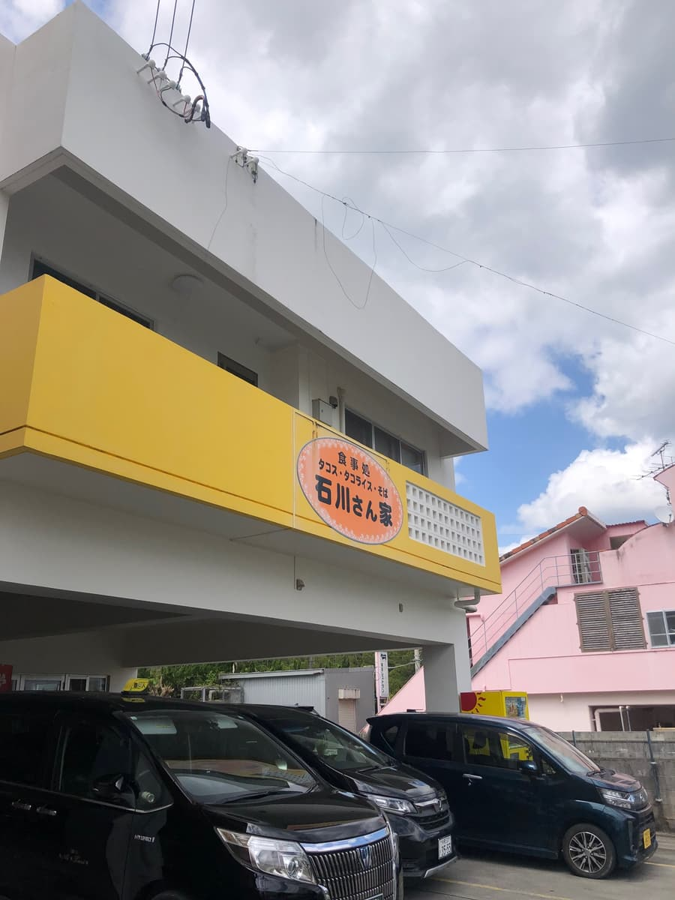
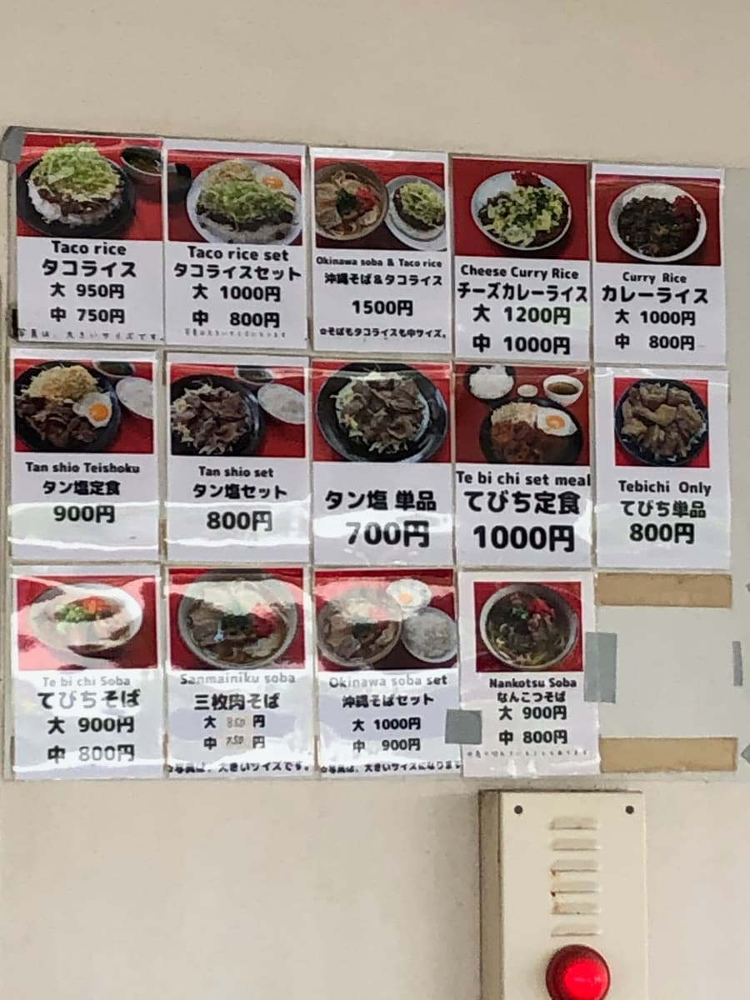
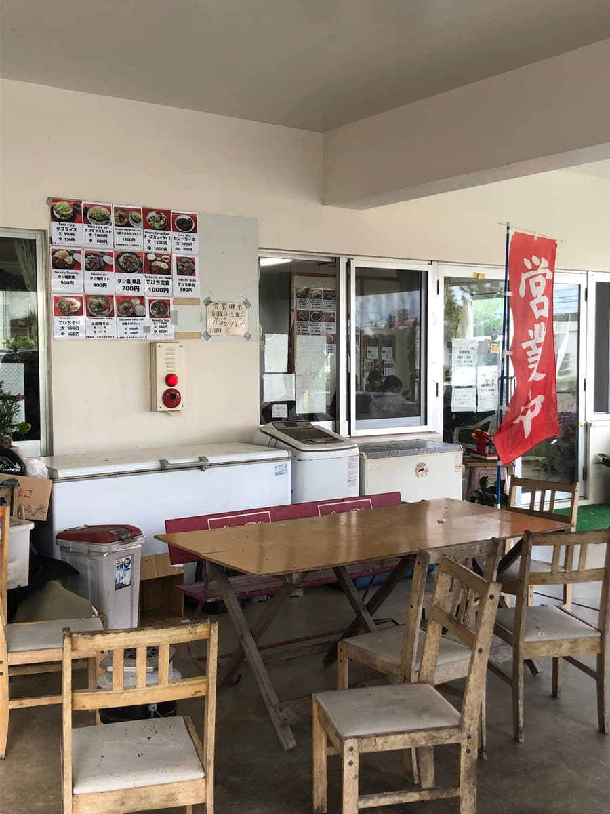
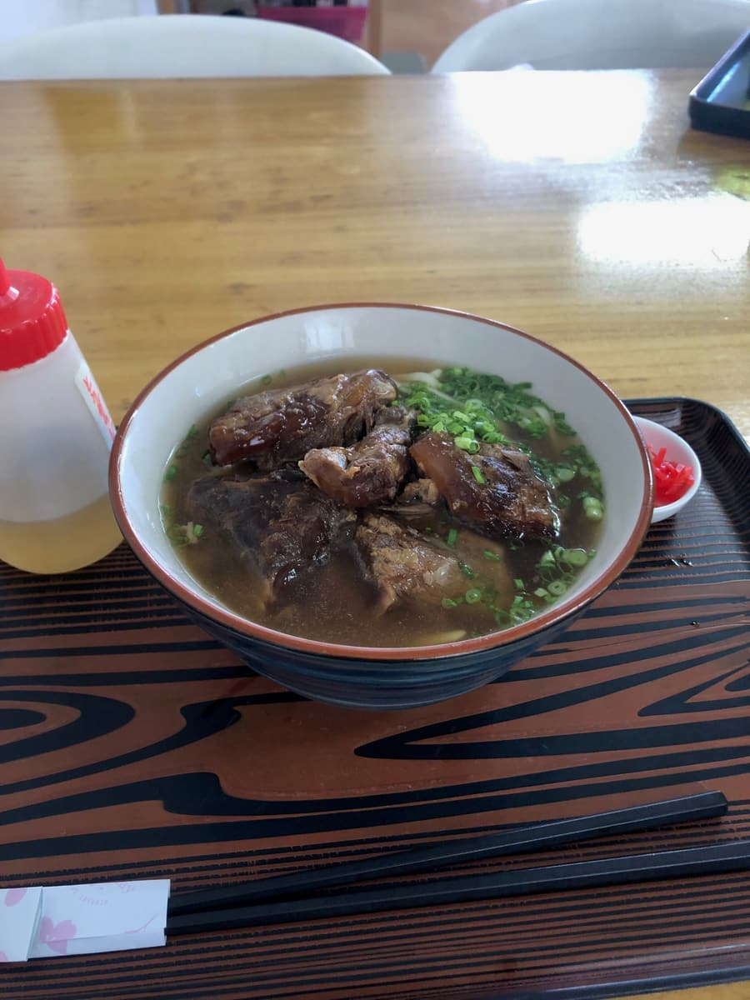
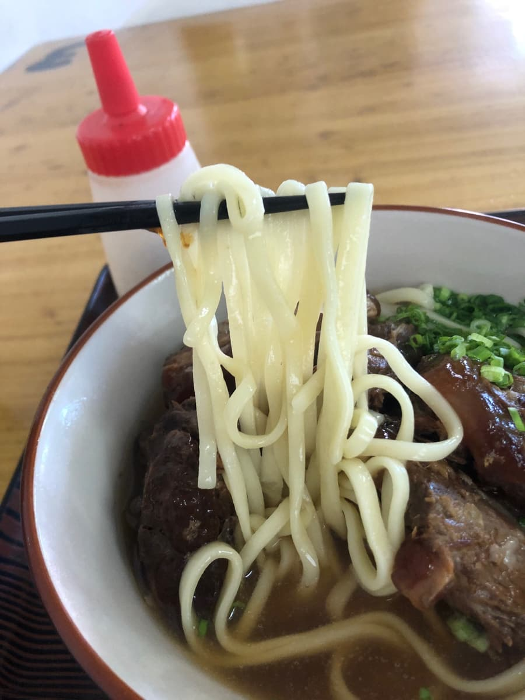

這次要介紹的是位於名護市為又的「食事處 石川さん家」🏠 2025年3月吃的😄

就在名護的護理學校正前方，附近還有名櫻大學，所以是位於學生和年輕人聚集、熱鬧區域裡的店。
說到外觀，以白色為基調的大樓1樓掛著醒目黃色帶狀的招牌，橘色圓形標誌中大大寫著「食事處 Tacos・塔可飯・麵 石川さん家」的字樣。

與其說是沖繩麵店，更像是以墨西哥夾餅和塔可飯為主的食堂氛圍，仔細看菜單，確實有塔可飯、塔可飯套餐、起司咖哩飯、鹽味牛舌套餐、豬腳套餐等，沖繩麵以外的菜色很充實，種類豐富😄

說是店內，其實比較像是在停車場空間加上屋頂的半戶外挑高空間裡排著桌椅，也就是所謂開放式的食堂風格。牆上整排貼著附照片的菜單，光看就很有趣。洋溢著沖繩特有、不做作的在地感，完全是扎根在地型食堂的氛圍🌺
中午時段造訪，有很多看起來是附近學校的年輕學生。一個人掌店的老闆娘，忙著招呼一個接一個進來的客人。從點餐到上菜花了一點時間，等了一下😅
這次點的是「軟骨麵（大）」900日圓🍜

首先喝一口湯。豬骨與柴魚的綜合高湯，豬骨的風味很明顯地跑在前面。雖然沒有特別突出的個性，但一般好吃😋

接著吃麵。中粗的直麵，口感整體偏軟。個人希望再多一點彈性和嚼勁，但和湯頭很融合，是很好入口的麵。
然後是這次的重頭戲，軟骨排骨！🥩 大塊的放了滿滿一堆，視覺上的份量感相當可觀。偏甜的濃郁味道確實滲入其中，這點很有吃頭。只是還殘留一點筋感（口感偏韌），與其說燉得軟嫩，比較是有嚼勁的口感。如果能再燉久一點就好了，是這樣的印象🤔
評分（9分/15分）：是一碗「一般好吃～」的感覺。因為就在護理學校和名櫻大學附近，很能理解這是一家作為學生日常用餐處而受到喜愛的店。墨西哥夾餅和塔可飯等其他菜色也讓我很好奇，下次專程為了那些再訪或許也很有趣。在名護一帶找沖繩麵店時，可以當作選擇之一參考看看😊
麵：★★★☆☆（3）
湯頭：★★★☆☆（3）
配料：★★★☆☆（3）